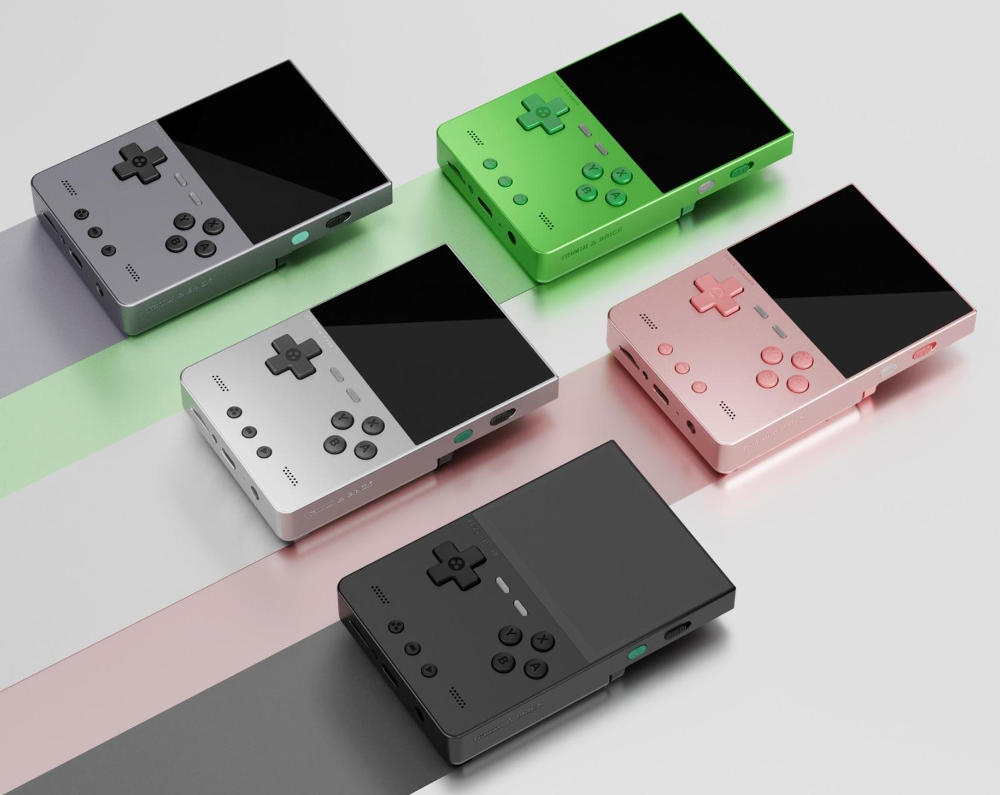

What's New?
The Trimui Brick has always been a popular handheld, even with that bizarre name. It’s a nicely made device, and has decent power at a really good price. And to top it off the screen is absolutely brilliant, especially at this price point! Now we have the upgraded Trimui Brick Hammer, and to get this out of the way straight away, it’s basically the same as it’s sibling except for five new stunning colors including black, dark grey, silver, green and rose gold, and its now made with a full metal chassis. Quite simply if you liked the Trimui Brick, and don’t mind paying for the metal shell, then this handheld is highly recommended.

The Trimui Brick Hammer weighs 196g, compared to 157g for the previous version. However you won’t really notice a big difference. The only real difference between the Trimui Brick Hammer and the original, is it’s now made of metal which gives it a more premium feel. The rear is slightly different regarding where they have the name placed, and that’s about it. The Trimui Brick Hammer is a great little handheld. It feels even better in the hand with the full metal casing than its sibling and the image quality is fantastic. It plays everything up to PS1 and small enough to slip into your pocket. Currently priced at $124.99 which includes a 128GB SD card, it’s a great purchase.
Specs
- CPU – Allwinner A133P, 1.8GHz
- GPU – Imagination PowerVR GE8300, 660MHz
- RAM – 1GB LPDDR3
- Storage – 8GB eMMC, TF card up to 1TB
- Display – 3.2″, 4:3, 1024×768 IPS
- Wireless – Wi-Fi b/g/n, Bluetooth 2.1+EDR/4.2
- Audio – Front-firing stereo speakers, 3.5mm headphone jack, mono mic
- Battery – 3000mAh – Approximately 5-6 hours of life
- Ports – USB-C (charging, data, USB host), TF card slot
- Additional – Vibration motor, RGB lighting, FN keys
- OS – TrimUI Stock Linux OS, MinUI available
- Dimensions – 110 x 73 x 12-20mm
- Weight – 196g